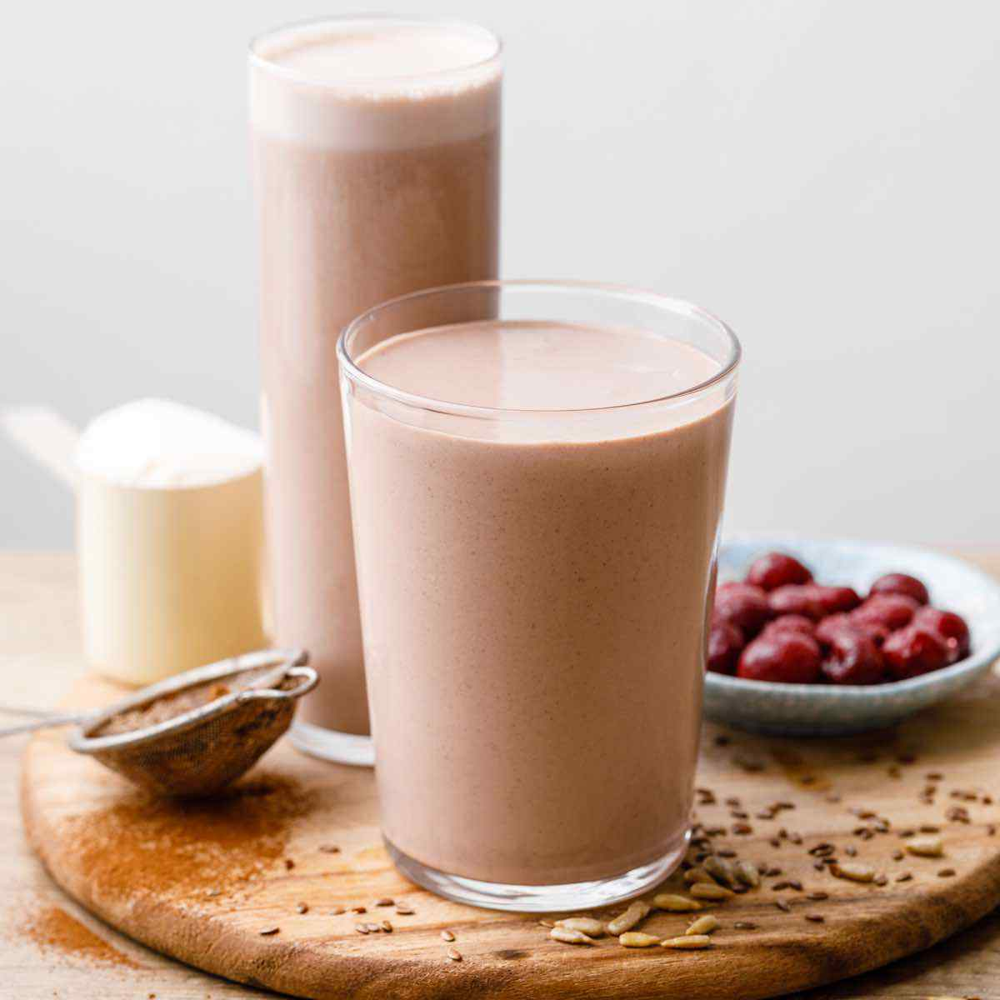

Mass Gainer Smoothie

Description
Mass Gainer Smoothie is a meal replacing smoothie that can be consumed twice per day by those looking to gain weight.
Ingredients
- 1 large banana
- 2 tbsp natural peanut butter
- 1 scoop whey protein powder (or 3 full eggs)
- 400 ml full fat milk (or almond milk if lactose intolerant)
- 6-8 almonds
- a handful of berries (or some chocolate powder for a more sweet but unhealthier option)
Steps
- Cut the banana into thin slices
- add all the components into a large blender
- Blend until the required thickness is reached
- Pour into a large shaker and consume!
- Enjoy!